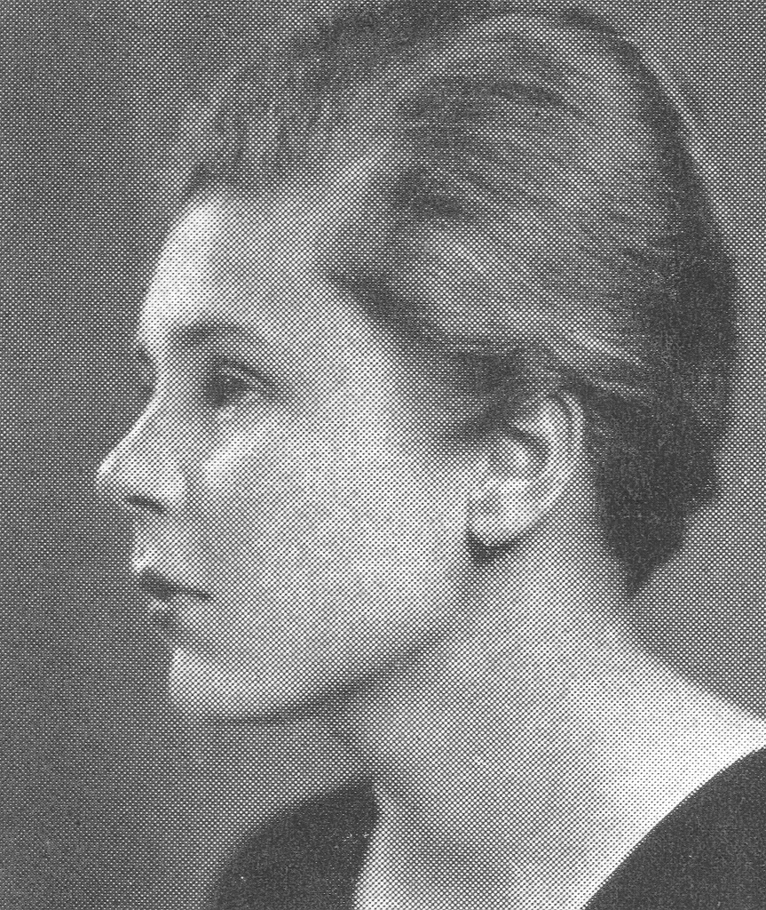

Cambridge Women's Heritage Project
Fun Facts & Firsts
Did you know...
Elizabeth Halsted

Led the campaign to close Memorial Drive to automobile traffic on Sundays
Cambridge Women Firsts:
Barbara Ackermann

The first woman to serve as the mayor of the City of Cambridge
Maria Baldwin

The
first Black
woman to be appointed as a principal at a public school in Massachusetts
Elizabeth Bishop

In 1976, became the first American and the first woman to be awarded the Books Abroad/Neustadt International Prize for Literature
Mary Bodecker
set up the first case management program in the country to work with incarcerated women with AIDS
The Cambridge
School of Architecture and Landcape Architecture was the first to offer women graduate
training
in
both architecture
and landscape architecture under a single faculty
Dr. Ruth
Easterling
was the first African American woman to be admitted to Tufts University School of Medicine
Ruth Elliot was the first
woman to be elected president of the American Public Health Association in 1947
Saundra Graham was the
first woman of color to be elected to the Cambridge City
Council
Alice Hamilton
was named the first woman professor at the Women's Medical School of Northwestern University
Suzanne Hiatt
presented a woman for ordination of the Diocese of London's first ordination of women in St
Paul's
Cathedral in 1994
Lois Howe
was a founding member of MIT's first women student's group